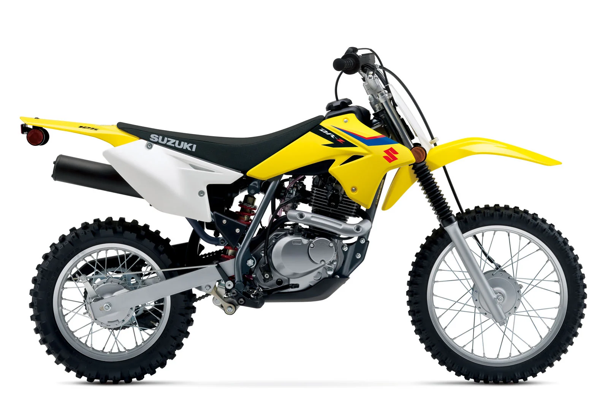

Blending race-inspired looks along with an exciting entry-level off-road package creates the DR-Z125. Built around a time-proven chassis and engine package. Inheriting sleek designs from its RM-Z brothers, the DR-Z125 yields motocross styling that looks good at the local track or a favourite trail. The DR-Z125 comes stocked with all the necessities for long, exciting rides. Styled to reflect the RM-Z models, this DR-Z promotes a more race-oriented look while the sharp handling and strong low-to-mid end power provide the get-up-and-go that defines off-road bikes. The looks are a testament that you can’t judge a book by its cover because the DR-Z125 is a simple package packed with loads of fun.
